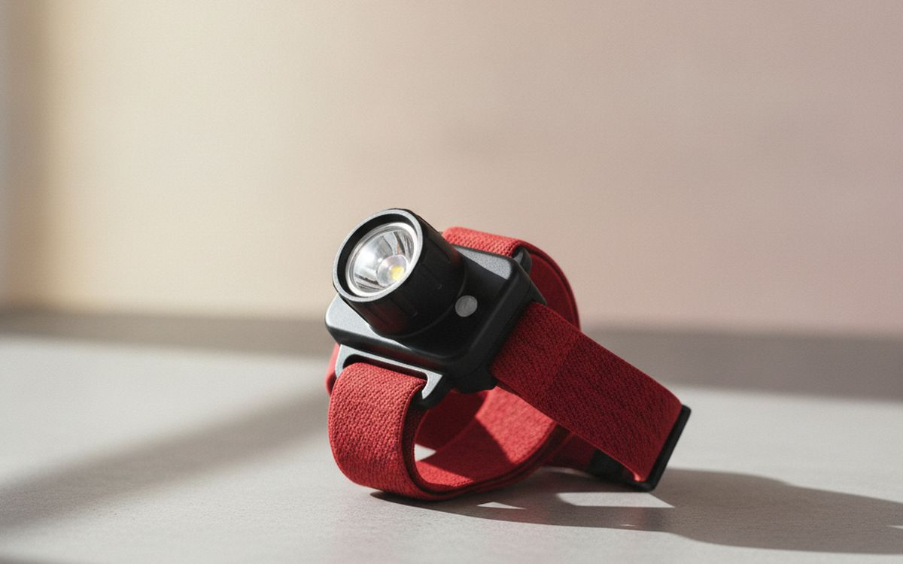
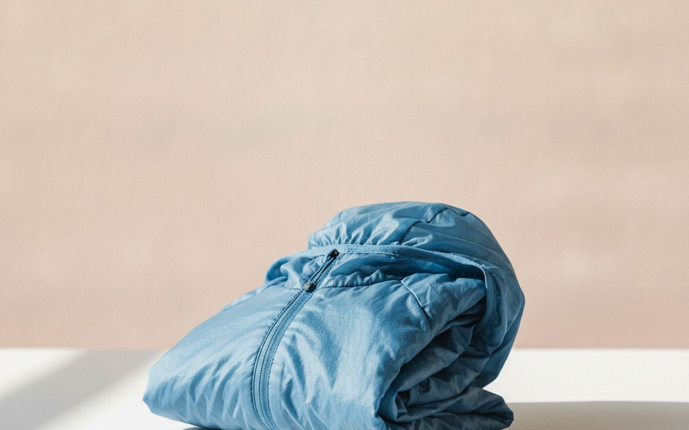
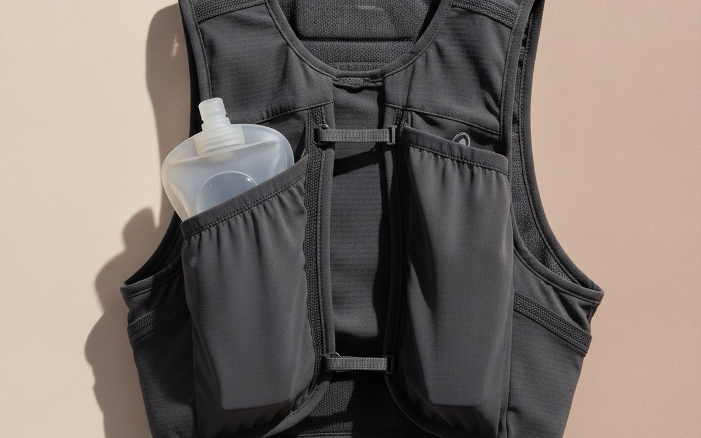
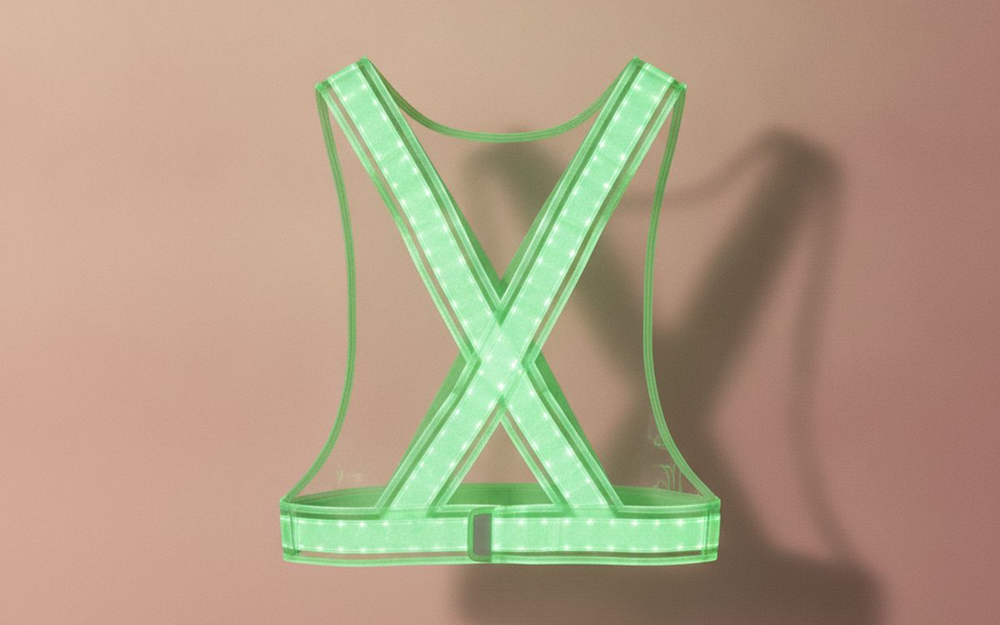
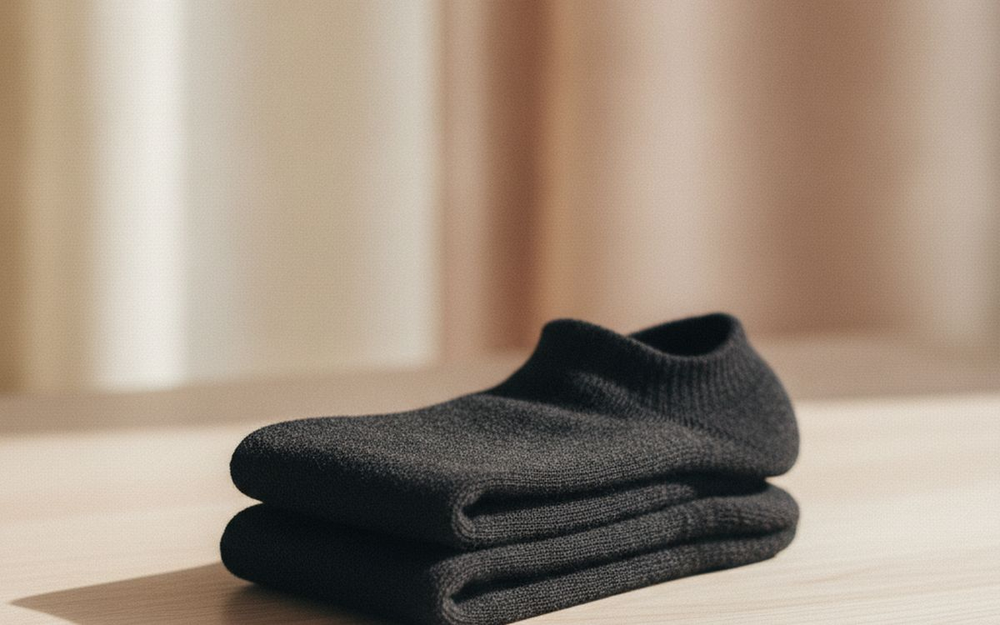
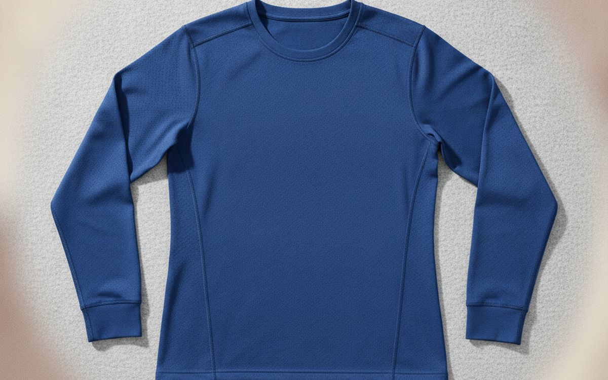
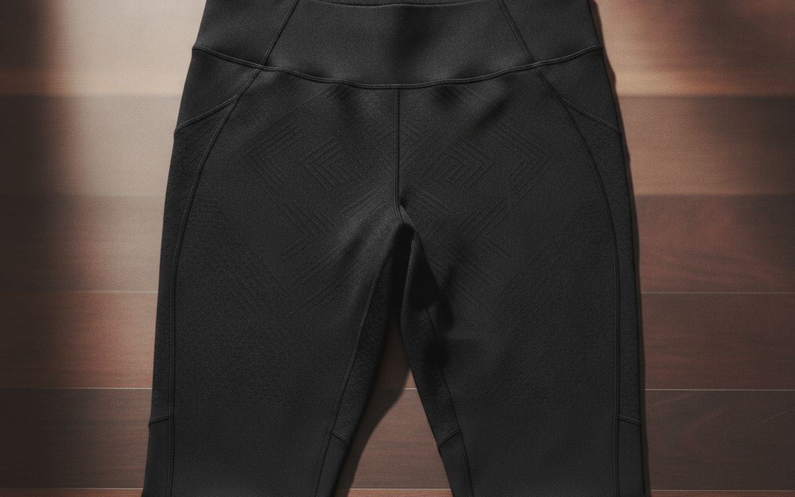
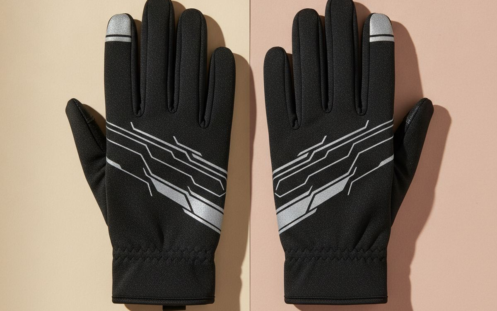
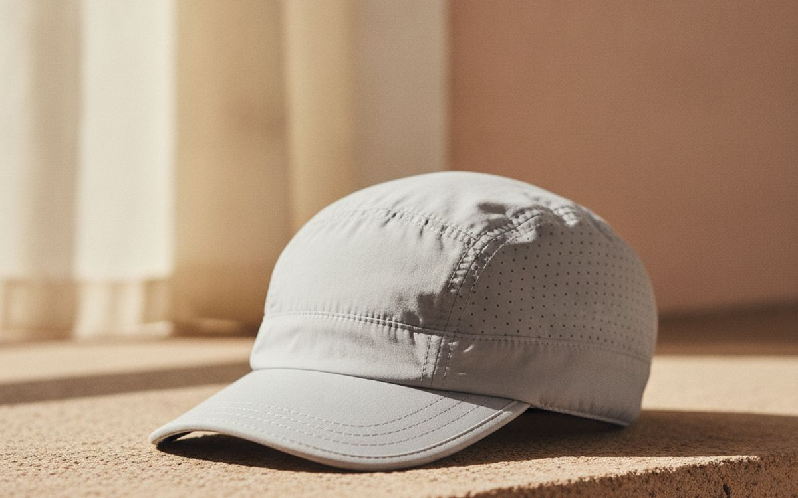
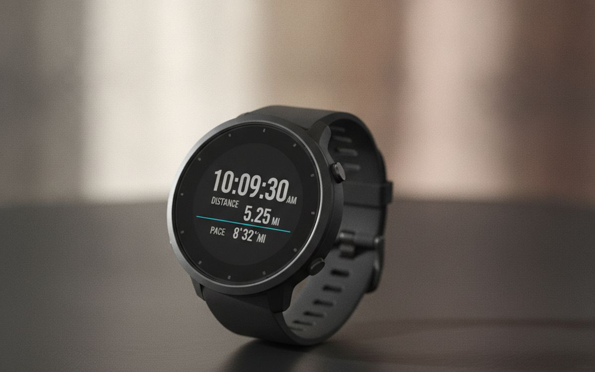

Εξοπλιστείτε για τρέξιμο σε εξωτερικούς χώρους με είδη που αντέχουν, αποδίδουν αξιόπιστα και δικαιολογούν το κόστος τους.
Το τρέξιμο σε εξωτερικούς χώρους είναι μια απλή δραστηριότητα, αλλά η αγορά εξοπλισμού συχνά την περιπλέκει. Πολλοί δρομείς ξεκινούν με βασικά ρούχα, μόνο για να διαπιστώσουν ότι είναι άβολα ή ανεπαρκή σε μεταβαλλόμενες καιρικές συνθήκες. Η έλξη του εξειδικευμένου εξοπλισμού είναι ισχυρή, υποσχόμενη βελτιωμένη απόδοση ή άνεση, ωστόσο μεγάλο μέρος του προσφέρει οριακά οφέλη με σημαντικό κόστος. Είναι εύκολο να συσσωρεύσετε αντικείμενα που αποδεικνύονται περιττά ή ακατάλληλα για τις πραγματικές σας συνθήκες τρεξίματος.
Η παγίδα έγκειται στην πεποίθηση ότι κάθε νέο προϊόν προσφέρει σημαντική βελτίωση. Το μάρκετινγκ συχνά τονίζει χαρακτηριστικά που ακούγονται εντυπωσιακά, αλλά μεταφράζονται ελάχιστα στην πραγματική χρήση. Πριν αγοράσετε, σκεφτείτε τι προβλήματα χρειάζεστε πραγματικά να λύσετε: ορατότητα, διαχείριση ιδρώτα ή διατήρηση ζέστης. Δώστε προτεραιότητα στην ανθεκτικότητα και την πρακτικότητα έναντι της εντυπωσιακής αισθητικής ή μιας μακράς λίστας τεχνικών όρων. Εστιάστε σε κομμάτια που αποδίδουν σταθερά τον προοριζόμενο σκοπό τους, χιλιόμετρο με χιλιόμετρο.
Γνωστοποίηση. Οι σύνδεσμοι σε αυτή τη σελίδα είναι συνδεδεμένοι. Αν αγοράσετε μέσω κάποιου, ενδέχεται να λάβουμε προμήθεια χωρίς επιπλέον κόστος για εσάς. Δεν επηρεάζει το τι μπαίνει στη λίστα ούτε τη σειρά της.
Πώς επιλέξαμε
Επιλέξαμε αυτά τα είδη για τρέξιμο με βάση τη σταθερή τους φήμη για αξιοπιστία, λειτουργικό σχεδιασμό και χρησιμότητα για δρομείς που τρέχουν συχνά σε εξωτερικούς χώρους. Η εστίαση είναι στην πρακτική απόδοση σε διάφορες συνθήκες, αντί για εξειδικευμένες εφαρμογές ή πολυτελή χαρακτηριστικά. Λάβαμε υπόψη γνωστές ιδιότητες υλικών, μεθόδους κατασκευής και σχόλια χρηστών σχετικά με τη μακροζωία και την αποτελεσματικότητα. Αυτές δεν είναι κριτικές από πρώτο χέρι. δεν έχουμε δοκιμάσει αυτά τα συγκεκριμένα προϊόντα. Οι συστάσεις μας προέρχονται από δημόσια διαθέσιμες πληροφορίες σχετικά με το πώς αποδίδουν αυτού του είδους τα προϊόντα για τον προοριζόμενο σκοπό τους.
Με μια ματιά
Οι τιμές είναι ενδεικτικές κατά τη συγγραφή και αλλάζουν συχνά.
Οι επιλογές

1
Βλέπετε τον δρόμο σας καθαράPetzl Actik Core
$70-100
Το τρέξιμο στο σκοτάδι απαιτεί μια αξιόπιστη πηγή φωτός. Το Petzl Actik Core είναι μια ευρέως προτεινόμενη επιλογή λόγω της σταθερής απόδοσης και της ευκολίας χρήσης του. Προσφέρει 600 lumens, που είναι επαρκή για τρέξιμο σε μονοπάτια τη νύχτα, και περιλαμβάνει λειτουργία κόκκινου φωτός για τη διατήρηση της νυχτερινής όρασης ή για έκτακτες ανάγκες. Χρησιμοποιεί υβριδικό σχεδιασμό, επιτρέποντάς του να λειτουργεί είτε με την περιλαμβανόμενη επαναφορτιζόμενη μπαταρία είτε με τυπικές μπαταρίες AAA, ένα πρακτικό χαρακτηριστικό για μεγαλύτερες εξορμήσεις ή όταν η φόρτιση δεν είναι δυνατή. Το μοτίβο της δέσμης είναι ένας συνδυασμός διάχυτου και εστιασμένου φωτός, προσφέροντας καλή περιφερειακή ορατότητα, ενώ παράλληλα φωτίζει αποτελεσματικά τον δρόμο μπροστά. Είναι μια σταθερή επιλογή για ασφάλεια και πλοήγηση.
Γιατί είναι εδώ
- Συμβατό με επαναφορτιζόμενη μπαταρία και μπαταρίες AAA
- Επαρκής φωτεινότητα για μονοπάτια
- Απλή λειτουργία
Αξίζει να ξέρετε
- Δεν είναι η ελαφρύτερη διαθέσιμη επιλογή
- Η διάρκεια ζωής της μπαταρίας μπορεί να μειωθεί με τον χρόνο

2
Αποκλείει τον αέρα, απωθεί την ελαφριά βροχήPatagonia Houdini Jacket
$100-130
Ένα αντιανεμικό που προσφέρει κάποια προστασία από τη βροχή είναι συχνά πιο χρήσιμο από ένα πλήρως αδιάβροχο μπουφάν για τρέξιμο. Το Patagonia Houdini είναι μια δημοφιλής επιλογή για αυτόν τον σκοπό. Χρησιμοποιεί ανθεκτικό νάιλον ripstop με επίστρωση DWR (durable water repellent), η οποία αποκλείει αποτελεσματικά τον αέρα και απωθεί την ελαφριά βροχή. Δεν είναι σχεδιασμένο για καταιγίδες, όπου τελικά θα διαβραχεί, αλλά παρέχει επαρκή προστασία για απρόσμενες βροχές ή ομιχλώδεις συνθήκες. Το κύριο πλεονέκτημά του είναι η δυνατότητα συσκευασίας του. χωράει στην δική του τσέπη στο στήθος, καθιστώντας το εύκολο στη μεταφορά χωρίς όγκο. Αυτή η ισορροπία προστασίας και φορητότητας το καθιστά ένα πρακτικό στρώμα για μεταβλητές καιρικές συνθήκες.
Γιατί είναι εδώ
- Πολύ ελαφρύ και συσκευάζεται εύκολα
- Καλή αντοχή στον αέρα
- Επαρκές για ελαφριά βροχή
Αξίζει να ξέρετε
- Όχι πλήρως αδιάβροχο για δυνατή βροχή
- Η ανθεκτικότητα της επίστρωσης DWR μειώνεται με το πλύσιμο

3
Μεταφέρετε νερό και απαραίτηταNathan VaporAir 2.0 7L Hydration Vest
$120-150
Για τρεξίματα μεγαλύτερα της μιας ώρας ή σε ζεστό καιρό, η μεταφορά νερού γίνεται απαραίτητη. Ένα γιλέκο τρεξίματος κατανέμει καλύτερα το βάρος από ένα μπουκάλι χειρός και απελευθερώνει τα χέρια σας. Το Nathan VaporAir 2.0 προσφέρει χωρητικότητα 7 λίτρων, που είναι αρκετή για ένα τηλέφωνο, κλειδιά, διατροφή και ένα επιπλέον στρώμα, εκτός από την περιλαμβανόμενη δεξαμενή ενυδάτωσης 2 λίτρων. Η εφαρμογή είναι ρυθμιζόμενη, με στόχο τη μείωση του τρεμοπαίγματος, ένα συνηθισμένο παράπονο με λιγότερο σταθερά γιλέκα. Οι τσέπες είναι προσβάσιμες εν κινήσει, μια μικρή λεπτομέρεια που κάνει τη διαφορά. Είναι ένα λειτουργικό κομμάτι για μεγαλύτερες εξορμήσεις όπου χρειάζεστε κάτι παραπάνω από ένα τηλέφωνο.
Γιατί είναι εδώ
- Καλή χωρητικότητα για μεγάλες διαδρομές
- Περιλαμβάνεται δεξαμενή ενυδάτωσης
- Ρυθμιζόμενη, σταθερή εφαρμογή
Αξίζει να ξέρετε
- Μπορεί να αισθάνεται ζεστό σε ζεστό καιρό
- Η αρχική ρύθμιση της εφαρμογής απαιτεί χρόνο

4
Να σας βλέπουν τη νύχταNoxgear Tracer360 Visibility Vest
$60-80
Η ορατότητα είναι κρίσιμη όταν τρέχετε κοντά σε δρόμους σε χαμηλό φωτισμό. Ενώ ένας φακός κεφαλής φωτίζει το μονοπάτι σας, ένα ανακλαστικό γιλέκο διασφαλίζει ότι οι άλλοι σας βλέπουν. Το Noxgear Tracer360 χρησιμοποιεί φώτα LED σε πολλαπλά χρώματα για να παρέχει ορατότητα 360 μοιρών, αντί απλώς ανακλαστικό υλικό που χρειάζεται εξωτερική πηγή φωτός για να λειτουργήσει. Τυλίγεται γύρω από τον κορμό, προσφέροντας ευρύτερο πεδίο φωτισμού από μικρά φώτα που κουμπώνουν. Τροφοδοτείται από τρεις μπαταρίες AAA, προσφέροντας πολλές ώρες χρήσης. Αυτό το συνεχές ενεργό φως σας κάνει πιο ευδιάκριτους σε οδηγούς και ποδηλάτες, ένα σημαντικό πλεονέκτημα ασφαλείας που τα παθητικά ανακλαστικά υλικά δεν παρέχουν πάντα.
Γιατί είναι εδώ
- Ενεργός φωτισμός 360 μοιρών
- Πολλαπλά χρώματα και λειτουργίες φωτισμού
- Ελαφρύ και άνετο
Αξίζει να ξέρετε
- Απαιτεί μπαταρίες, οι οποίες μπορεί να τελειώσουν
- Πιο ακριβό από τα βασικά ανακλαστικά γιλέκα

5
Πρόληψη φουσκαλών, διαχείριση υγρασίαςSmartwool Run Zero Cushion Low Ankle Socks
$15-20
Οι καλές κάλτσες τρεξίματος συχνά παραβλέπονται, αλλά είναι θεμελιώδεις για την άνεση και την πρόληψη φουσκαλών. Οι κάλτσες Smartwool Run Zero Cushion χρησιμοποιούν μαλλί merino, το οποίο βοηθά στη ρύθμιση της θερμοκρασίας, διατηρώντας τα πόδια δροσερά σε ζεστό καιρό και ζεστά σε κρύο καιρό. Το πιο σημαντικό, το μαλλί merino διαχειρίζεται αποτελεσματικά την υγρασία, απομακρύνοντας τον ιδρώτα από το δέρμα. Αυτό μειώνει την τριβή και την πιθανότητα εμφάνισης σημείων τριβής που εξελίσσονται σε φουσκάλες, ακόμη και σε μεγάλες διαδρομές. Ο σχεδιασμός "zero cushion" είναι λεπτός, κάτι που προτιμούν ορισμένοι δρομείς για στενή εφαρμογή με τα παπούτσια τους, αποφεύγοντας επιπλέον όγκο. Αποτελούν επένδυση σε σχέση με τις βασικές βαμβακερές κάλτσες.
Γιατί είναι εδώ
- Εξαιρετική απομάκρυνση υγρασίας
- Ρύθμιση θερμοκρασίας
- Αντέχει καλύτερα στις οσμές από τα συνθετικά
Αξίζει να ξέρετε
- Πιο ακριβές από τις συνθετικές κάλτσες
- Απαιτεί ευαίσθητο πλύσιμο για παράταση της διάρκειας ζωής

6
Απομακρύνει τον ιδρώτα, μπλοκάρει τον ήλιοPatagonia Capilene Cool Daily Long-Sleeved Shirt
$50-70
Ένα μακρυμάνικο τεχνικό μπλουζάκι προσφέρει ευελιξία για τρέξιμο σε εξωτερικούς χώρους, παρέχοντας προστασία από τον ήλιο σε πιο ζεστό καιρό και ένα ελαφρύ βασικό στρώμα σε πιο δροσερές συνθήκες. Το Patagonia Capilene Cool Daily χρησιμοποιεί ύφασμα από ανακυκλωμένο πολυεστέρα σχεδιασμένο να απομακρύνει γρήγορα την υγρασία από το δέρμα, βοηθώντας να παραμείνετε στεγνοί και άνετοι. Ενσωματώνει επίσης τον έλεγχο οσμών HeiQ Pure, ο οποίος μπορεί να είναι χρήσιμος για χρήση πολλών ημερών ή αν ιδρώνετε πολύ. Σε αντίθεση με το βαμβάκι, διατηρεί τις μονωτικές του ιδιότητες όταν είναι βρεγμένο, ένα βασικό πλεονέκτημα. Ο απλός σχεδιασμός του δίνει προτεραιότητα στη λειτουργία έναντι των φανφάρων, καθιστώντας το ένα αξιόπιστο εργαλείο για διάφορες εποχές.
Γιατί είναι εδώ
- Καλή διαχείριση υγρασίας
- Προσφέρει προστασία από τον ήλιο
- Επεξεργασία ελέγχου οσμών
Αξίζει να ξέρετε
- Μπορεί να κολλάει όταν ιδρώνετε πολύ
- Λιγότερο μονωτικό από βαρύτερα βασικά στρώματα

7
Μείνετε ζεστοί σε κρύο αέραCraft Active Extreme X Wind Tights
$90-120
Για τρέξιμο σε κρύο καιρό, ένα καλό ζευγάρι κολάν είναι πιο αποτελεσματικό από το να φοράτε παντελόνια φόρμας πάνω από σορτς. Τα Craft Active Extreme X Wind Tights είναι σχεδιασμένα για πραγματικά κρύες συνθήκες, διαθέτοντας αντιανεμικό πάνελ στο μπροστινό μέρος που προστατεύει τις ευάλωτες περιοχές από τον τσουχτερό αέρα. Το ίδιο το ύφασμα είναι λεπτό αλλά αποτελεσματικό στο να παγιδεύει τη ζέστη κοντά στο σώμα, ενώ παράλληλα απομακρύνει την υγρασία. Προσφέρουν ζεστασιά χωρίς όγκο, κάτι που είναι κρίσιμο για την ελευθερία κινήσεων κατά τη διάρκεια του τρεξίματος. Αυτά είναι για δρομείς που δεν θα διστάσουν να αντιμετωπίσουν θερμοκρασίες υπό το μηδέν και χρειάζονται ειδική προστασία.
Γιατί είναι εδώ
- Εξαιρετική αντιανεμική προστασία στο μπροστινό πάνελ
- Καλός λόγος ζεστασιάς προς βάρος
- Αποτελεσματική απομάκρυνση υγρασίας
Αξίζει να ξέρετε
- Το αντιανεμικό πάνελ μπορεί να αισθάνεται ελαφρώς άκαμπτο
- Λιγότερο ευέλικτο για ήπιο κρύο

8
Προστατέψτε τα χέρια από το κρύοBrooks Run Thru Gloves
$25-35
Τα κρύα χέρια μπορούν να κάνουν ένα κατά τα άλλα άνετο τρέξιμο δυσάρεστο. Τα ελαφριά γάντια τρεξίματος είναι συχνά επαρκή για θερμοκρασίες πάνω από το μηδέν, διατηρώντας τα άκρα ζεστά χωρίς υπερθέρμανση. Τα Brooks Run Thru Gloves είναι μια απλή, αποτελεσματική επιλογή. Είναι κατασκευασμένα από ύφασμα που απομακρύνει την υγρασία και παρέχει ελαφριά μόνωση, και διαθέτουν άκρες συμβατές με οθόνη αφής, ένα πρακτικό χαρακτηριστικό για τη χρήση τηλεφώνου ή ρολογιού χωρίς να εκθέτετε τα χέρια σας στο κρύο. Δεν είναι σχεδιασμένα για ακραίο κρύο, αλλά προσφέρουν επαρκή προστασία για τα περισσότερα πρωινά τρεξίματα με παγωνιά. Είναι ένα μικρό αντικείμενο που κάνει σημαντική διαφορά στην άνεση.
Γιατί είναι εδώ
- Συμβατά με οθόνη αφής
- Ελαφριά μόνωση
- Αποτελεσματικά για ήπιο κρύο
Αξίζει να ξέρετε
- Ακατάλληλα για πολύ κρύες ή υγρές συνθήκες
- Περιορισμένη ευκινησία για εργασίες λεπτής κινητικότητας

9
Προστασία από τον ήλιο, διαχείριση ιδρώταBuff CoolNet UV Half Marathon Cap
$25-35
Ένα καπέλο εξυπηρετεί πολλαπλούς σκοπούς για δρομείς σε εξωτερικούς χώρους: κρατά τον ήλιο μακριά από το πρόσωπό σας, συγκρατεί τον ιδρώτα και μπορεί να προσφέρει λίγη ζεστασιά ή δροσιά ανάλογα με το υλικό. Το Buff CoolNet UV Half Marathon Cap είναι σχεδιασμένο για πιο ζεστές συνθήκες, προσφέροντας προστασία από τον ήλιο UPF 50 και καλή διαπνοή. Το εύκαμπτο γείσο του το καθιστά συσκευάσιμο, κάτι που είναι βολικό αν θέλετε να το βγάλετε κατά τη διάρκεια του τρεξίματος. Για πιο δροσερό καιρό, ένα απλό σκουφάκι από μαλλί merino (όπως οι επιλογές της Smartwool) θα ήταν πιο κατάλληλο για ζεστασιά, αλλά για ήλιο και ιδρώτα, αυτό το είδος καπέλου είναι μια πρακτική επιλογή που δεν θα αισθάνεται βαρύ ή περιοριστικό.
Γιατί είναι εδώ
- Εξαιρετική προστασία από τον ήλιο
- Εξαιρετικά διαπνέον
- Συσκευάσιμο σχέδιο
Αξίζει να ξέρετε
- Λιγότερο αποτελεσματικό για ζεστασιά σε κρύο καιρό
- Το γείσο προσφέρει περιορισμένη προστασία από τη βροχή

10
Παρακολουθήστε τον ρυθμό και την απόστασή σαςGarmin Forerunner 255
$300-400
Ένα ρολόι GPS παρακολουθεί μετρήσεις όπως απόσταση, ρυθμό και χρόνο, οι οποίες μπορούν να είναι χρήσιμες για δομημένη προπόνηση ή παρακολούθηση της προόδου. Το Garmin Forerunner 255 είναι μια ικανή επιλογή μεσαίας κατηγορίας. Προσφέρει αξιόπιστη ακρίβεια GPS, ενσωματώνεται με κοινές πλατφόρμες προπόνησης και παρέχει παρακολούθηση καρδιακών παλμών. Ενώ πολλά τηλέφωνα προσφέρουν παρόμοια παρακολούθηση GPS μέσω εφαρμογών, ένα αποκλειστικό ρολόι σημαίνει ότι δεν χρειάζεται να μεταφέρετε τηλέφωνο, και παρέχει δεδομένα σε πραγματικό χρόνο με μια ματιά. Είναι ένα εργαλείο για τη μέτρηση της απόδοσης, όχι μια αναγκαιότητα για την ίδια την πράξη του τρεξίματος, και αντιπροσωπεύει μια σημαντική επένδυση σε σχέση με μια εφαρμογή τηλεφώνου.
Γιατί είναι εδώ
- Αξιόπιστη ακρίβεια GPS
- Μετρήσεις σε πραγματικό χρόνο με μια ματιά
- Μεγάλη διάρκεια ζωής μπαταρίας για συσκευή GPS
Αξίζει να ξέρετε
- Υψηλό αρχικό κόστος
- Απαιτεί τακτική φόρτιση
- Τα χαρακτηριστικά μπορεί να είναι υπερβολικά για περιστασιακούς χρήστες
Συχνές ερωτήσεις
Χρειάζομαι πραγματικά εξειδικευμένα ρούχα για τρέξιμο, ή μπορώ απλώς να χρησιμοποιήσω τα συνηθισμένα ρούχα γυμναστικής μου;
Για περιστασιακά, σύντομα τρεξίματα, τα συνηθισμένα ρούχα γυμναστικής είναι συχνά εντάξει. Ωστόσο, τα ειδικά ρούχα για τρέξιμο είναι σχεδιασμένα να απομακρύνουν τον ιδρώτα από το σώμα σας, αποτρέποντας το τρίψιμο και βοηθώντας στη ρύθμιση της θερμοκρασίας. Το βαμβάκι, για παράδειγμα, απορροφά τον ιδρώτα και παραμένει υγρό, κάτι που μπορεί να οδηγήσει σε δυσφορία, φουσκάλες και ρίγη σε ψυχρότερο καιρό. Η επένδυση σε μερικά βασικά τεχνικά κομμάτια, όπως ένα καλό μπλουζάκι και κάλτσες, θα βελτιώσει σημαντικά την άνεση και την απόδοση για τακτικό τρέξιμο σε εξωτερικούς χώρους. Δεν χρειάζεστε μια πλήρη γκαρνταρόμπα υψηλής τεχνολογίας, αλλά μερικά λειτουργικά είδη αξίζει να τα εξετάσετε.
Πόσο σημαντική είναι η αδιαβροχοποίηση για τα μπουφάν όταν τρέχετε σε εξωτερικούς χώρους, και ποιες είναι οι συμβιβασμοί;
Η πλήρης αδιαβροχοποίηση είναι κρίσιμη αν περιμένετε να τρέξετε σε δυνατή, συνεχή βροχή. Ωστόσο, τα πραγματικά αδιάβροχα μπουφάν τείνουν να είναι λιγότερο διαπνέοντα, παγιδεύοντας τον ιδρώτα και τη ζέστη στο εσωτερικό, κάτι που μπορεί να σας κάνει να αισθάνεστε υγροί. Για τους περισσότερους δρομείς, ένα ανθεκτικό στο νερό αντιανεμικό που απωθεί την ελαφριά βροχή και προστατεύει από τον αέρα είναι μια πιο ευέλικτη επιλογή. Αυτά τα μπουφάν προσφέρουν καλύτερη διαπνοή και είναι συχνά ελαφρύτερα και πιο συσκευάσιμα. Εκτός αν τρέχετε τακτικά σε καταιγίδες, η προτεραιότητα στη διαπνοή και την αντιανεμική προστασία έναντι της πλήρους αδιαβροχοποίησης μπορεί να είναι μια πιο πρακτική προσέγγιση για την άνεση κατά τη διάρκεια του τρεξίματος.
Αξίζει τα χρήματα ένα ρολόι GPS, ή μπορεί το τηλέφωνό μου να κάνει την ίδια δουλειά για την παρακολούθηση των τρεξιμάτων;
Το smartphone σας, σε συνδυασμό με μια εφαρμογή τρεξίματος, μπορεί να παρακολουθεί αποτελεσματικά την απόσταση, τον ρυθμό και τη διαδρομή σας χρησιμοποιώντας το ενσωματωμένο GPS του. Για πολλούς, αυτό είναι απόλυτα επαρκές. Ένα αποκλειστικό ρολόι GPS, ωστόσο, προσφέρει ευκολία. δεν χρειάζεται να μεταφέρετε το τηλέφωνό σας, και τα δεδομένα είναι ορατά με μια ματιά στον καρπό σας χωρίς να ψάχνετε. Τα ρολόγια τείνουν επίσης να έχουν πιο ακριβές GPS, προσφέρουν προηγμένες μετρήσεις όπως καρδιακούς παλμούς χωρίς ζώνη στήθους και έχουν μεγαλύτερη διάρκεια ζωής μπαταρίας για παρακολούθηση. Αν είστε σοβαροί με την προπόνηση και θέλετε λεπτομερή δεδομένα σε πραγματικό χρόνο, ένα ρολόι μπορεί να είναι επωφελές. Διαφορετικά, το τηλέφωνό σας είναι μια ικανή εναλλακτική.
Τι γίνεται με τα πακέτα ενυδάτωσης σε σύγκριση με τη μεταφορά ενός μπουκαλιού χειρός για νερό σε μεγαλύτερες διαδρομές;
Για μικρότερες διαδρομές όπου χρειάζεστε μόνο μια μικρή ποσότητα νερού, ένα μπουκάλι χειρός είναι απλό και βολικό. Είναι εύκολο να το γεμίσετε και να το καθαρίσετε, και μπορείτε να πιείτε μια γουλιά γρήγορα. Ωστόσο, η μεταφορά ενός μπουκαλιού για μεγαλύτερες αποστάσεις μπορεί να γίνει κουραστική, και μερικοί βρίσκουν το μεταβαλλόμενο βάρος αποσπαστικό. Τα γιλέκα ενυδάτωσης κατανέμουν το βάρος στην πλάτη και τους ώμους σας, προσφέροντας μια πιο ισορροπημένη εμπειρία hands-free. Επίσης, συνήθως σας επιτρέπουν να μεταφέρετε περισσότερο νερό και άλλα απαραίτητα. Ο συμβιβασμός είναι το υψηλότερο κόστος του γιλέκου, ο πιο περίπλοκος καθαρισμός και η πιθανότητα να αισθάνεστε ζεστό ή ογκώδες, ειδικά αν δεν είναι καλά συσκευασμένο.
← Όλοι οι οδηγοί
Έχουμε υποβάλει αίτηση για το Πρόγραμμα Συνεργατών της Amazon. Δεν είμαστε ακόμη Συνεργάτες της Amazon και δεν κερδίζουμε τίποτα από συνδέσμους Amazon. Οι τιμές και η διαθεσιμότητα ισχύουν κατά την ημερομηνία δημοσίευσης και ενδέχεται να αλλάξουν.